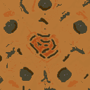
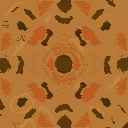

Maps
Map installation
Put these maps into the Dune Legacy map directories, either the singleplayer or the multiplayer directory. The location of these directories is platform dependent:
- Linux: ~/.config/dunelegacy/maps
- Windows: C:\Documents and Settings\<YourName>\Application Data\dunelegacy\maps\
- Mac OS X: ~/Library/Application Support/Dune Legacy/maps
Map Packs
- Mappack by Rippsblack (13 maps, included since Dune Legacy 0.96.2)
- Mappack by Heinrich Arkonnen (18 maps, included since Dune Legacy 0.96.4)
Maps

Map: 5P - 128x128 - Kragetam.ini
Author: Kuffar
Date: 15.05.2013 (included since Dune Legacy 0.96.4)
Map: 6P - 128x128 - Gargantuan Mountains.ini
Author: Kuffar
Date: 24.05.2013 (included since Dune Legacy 0.96.4)

Map: 5P - 128x128 - Hellvetika.ini
Author: Kuffar
Date: 16.06.2013 (included since Dune Legacy 0.96.4)
Map: 6P - 64x64 - Fertile Basin.ini
Author: Kuffar
Date: 16.06.2013 (included since Dune Legacy 0.96.4)
Creating your own maps
If you want to create a new map use the built-in map editor. To have it listed on this page, please contact us. Maps under creative commons license might even get included into a new Dune Legacy version.